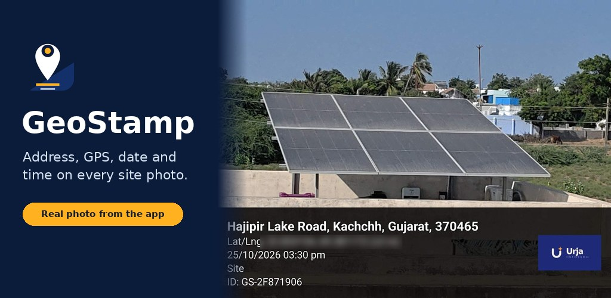
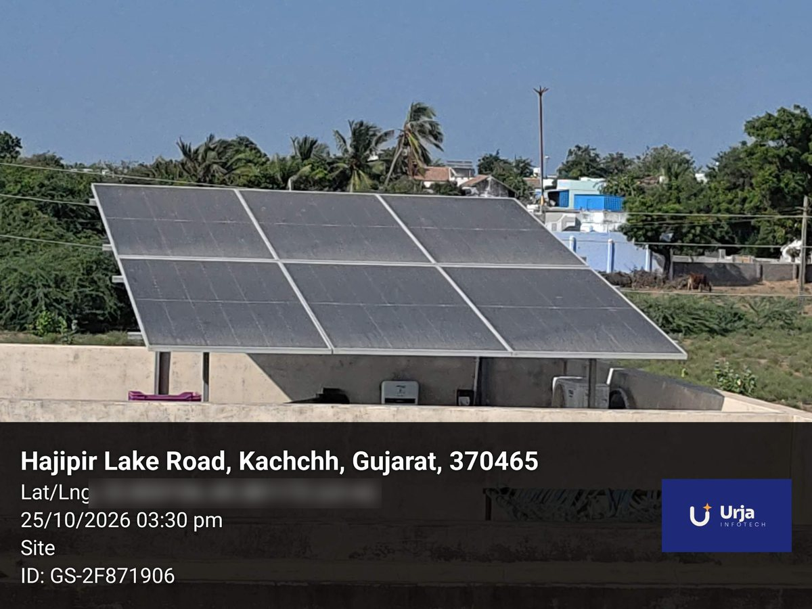

Business · For solar installers, contractors and field teams
A camera that prints the address, GPS location, date and time on every photo, and saves the location inside the photo file too. Made for site proof. No login.

દરેક ફોટા પર સરનામું, GPS લોકેશન, તારીખ અને સમય. સાઇટ પ્રૂફ માટે, ઇન્ટરનેટ વગર પણ.
हर फोटो पर पता, GPS लोकेशन, तारीख और समय। साइट प्रूफ के लिए, बिना इंटरनेट भी।
Testers: email us from your Google Play account and we will add you to the test.

Full details are in the privacy policy.